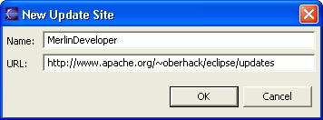
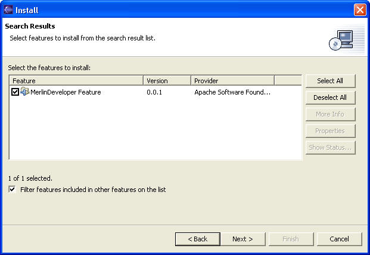
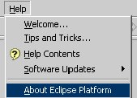
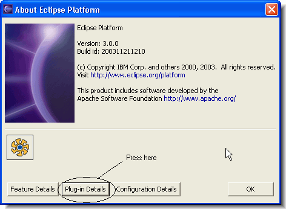

MerlinStudio is developed on an NT/2000/XP basis. Also MerlinStudio should run on all other operating systems on which the Eclipse environment is available it is not tested yet.
If anybody is testing MerlinStudio on other platforms, please let us know whether you succeeded.
MerlinStudio is only running on eclipse 3.x and is not backward compatible to any previous version of eclipse.
MerlinStudio is only running on JDK1.4 or higher.
Tests with IBM JDKs are on the way.
Note: Either if you start MerlinStudio the first time or you create your first Merlin container project you have to be connected to the Internet! This is because of a repository service of Merlin which automatically reloads all needed resources from a central repository over the internet.
Eclipse has got a very comfortable update manager through which you can install new software very easily.
An other advantage of the Update Manger is that you can check if there are new or updated software modules of your loaded plugins available. You can than download and install those modules with the Update Manager without downloading the whole Plugin again.
1. Please open the "Install/Update" Manager...

2. and select "Search for new features to install".

3. Please press "next".
You will enter the wizard page, which shows all currently available Update Sites. If you open the Update Manger the first time this page will empty.
4. Now press the "Add Update Site..." button...

and enter the name and the url of MerlinDevelopers Update Site as shown above. After pressing Ok, you should see something like this...

If you open the Node in the TreeView, the Update Manager will connect to the Update Site. The "Next" button will be enabled if the connection is established. 5. Pressing the "Next" button will switch to the next Wizard Page and show all available versions of MerlinStudio.

6. Select the feature and the version you want to install
Pressing "Next" will lead you through the installation process.
After finishing the installation process you will be asked to restart your Eclipse installation
You can download the binary installation of MerlinStudio here.
To install MerlinStudio through the downloadable .zip file, please proceed with the following steps:
1. Please make sure that you have installed a valid eclipse version. (see System Requirements).
2. Extract the content of the .zip archive 'MerlinStudio_[version].zip' into directory $ECLIPSE_HOME$/plugins, where $ECLIPSE_HOME$ is the directory where Eclipse is installed on your machine.
3. Start Eclipse - if Eclipse is already running, please restart Eclipse.
4. After you have restarted Eclipse you can check that MerlinDeveloper was successfully installed and loaded.
First open the "About Dialog".

Please press Plug-in Details button in About dialog

Now you should see this list:

If you don’t see those MerlinStudio Plug-ins in the list:
Check that you have installed the correct version of MerlinStudio for the version of Eclipse that you are using.
Check for error messages in file: $ECLIPSE_HOME$\workspace\.metadata\.log
Shutdown Eclipse, delete this file, start Eclipse again, and try to use MerlinStudio. This process will remove old error messages and only include messages about the MerlinStudio or Eclipse loading process in the file listed above..